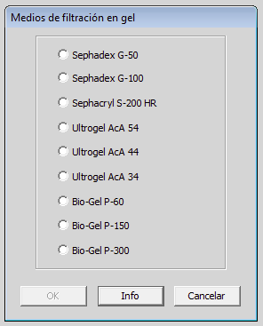
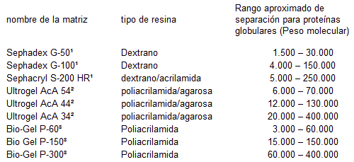

Ejercicio previo
Próximo ejercicio
Ejercicio previo
Próximo ejercicio
Ejercicio 2 de 6
Filtración por gel de una mezcla simple de tres proteínas
En este punto, usted se encuentra listo para realizar algunos experimentos con su mezcla de proteínas. Usted no posee más información acerca de la mezcla de proteínas a parte de la información general de estabilidad. La mezcla de proteínas puede ser analizada por electroforesis bi-dimensional (2D PAGE). Esta técnica separa las proteínas en la primera dimensión por isoelectroenfoque seguido de una electroforesis el gel de poliacrilamida en SDS en la segunda dimensión. En la primera dimensión las proteínas se separan en orden por su punto isoeléctrico, en la segunda dimensión las proteínas se separan siguiendo el orden de su peso molecular.
Click en el menú PAGE y seleccione PAGE en dos dimensiones. Usted debería obtener el siguiente resultado:

Como era de esperarse, hay 3 manchas, correspondientes a cada una de las proteínas en la mezcla. Se encuentran numeradas en el diagrama superior. Observe el patrón de las manchas. Estime el pI y el peso molecular (Mr) de cada proteína. Regístrelos ya que los utilizará más adelante. Note que el tamaño relativo de cada mancha es el mismo, indicando que hay cantidades iguales de cada proteína en la muestra.
Ahora haga click en el menú PAGE y seleccione Ocultar gel, para volver al programa principal.

Ahora usted puede tratar de separar las proteínas por filtración por gel.
Haga click en el menú Separación y seleccione Filtración por Gel…

El programa ahora ofrecerá una selección de soportes de filtración. ¿Cual seleccionar? Hacer click en el botón Info.

Las matrices son productos representativos de tres diferentes distribuidores. Tome en cuenta los rangos de fraccionamiento. Para obtener la mejor separación, usted debe seleccionar una matriz que coincida lo mejor posible con el rango de proteínas que contiene su mezcla (tome en cuenta que estos son pesos moleculares de proteínas en estado nativo, mientras en SDS PAGE se utilizan pesos moleculares de las subunidades.)

Cierre la ventana del navegador Info, seleccione el Sephadex G-100 y luego haga click en OK.
El programa posteriormente simulará la separación que se habría obtenido si se separa la mezcla de proteínas, utilizando una columna rellena con Sephadex G-100. Se han colectado las fracciones y medido la absorbancia a 280nm . ¿Que representa esto?
Fíjese en el perfil de elución. ¿Cuantos peaks se ven? ¿Son todos del mismo tamaño? Fíjese en los pesos moleculares de las subunidades que usted ha registrado para las proteínas. Examine el material en cada peak por 2D PAGE(utilizando el menú PAGE). ¿Que proteínas hay en cada peak? ¿Usted puede explicar este resultado?

Trate de mejorar la separación de sus tres proteínas utilizando un diferente soporte de filtración.
Para hacer esto haga click en el menú Abandonar, Abandonar esta y etapa y continuar.
Luego haga click en el menú Separación y seleccione Filtración por Gel….
Seleccione una nueva resina e intente nuevamente.
¿Funcionó mejor? ¿Puede explicar este resultado?
Hora de probar algo diferente. Cromatografía de intercambio iónico.